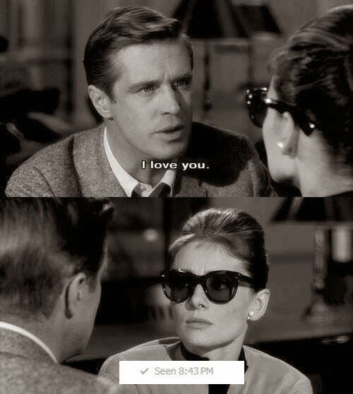
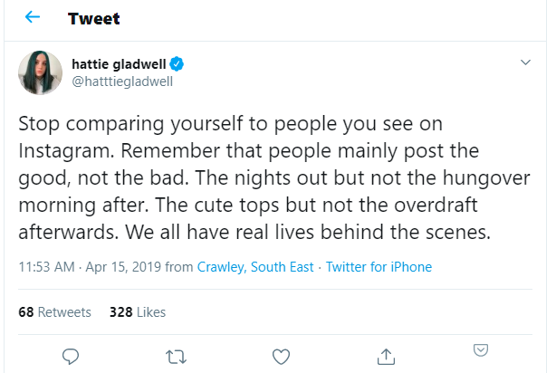

Ways to end your happiness
April 8, 2020
Are you feeling too happy? Here are some surefire ways to destroy that feeling.
1. Text your crush
Doesn’t matter whether they reply immediately, reply late or don’t reply at all. It’s never what you want. Goodbye happiness. Hello uncertainty, anxiety, insecurity and all those other wonderful feelings.

2. Take everything personally
If someone says “I don’t like bananas” but you like bananas, interpret it as “Anyone who likes bananas is stupid” and get personally offended. You will never be happy this way.
3. Get drunk
Getting drunk is associated with partying and happy hours. Don’t stop there. Get drunk till you start crying. Trust me it will happen. Then drink some more till you vomit and pass out. For extra points check your phone when you wake up to see all the embarassing shit you did.
4. Call customer care
Doesn’t matter which company. You will end up pulling your hair out with frustration. An alternative to this is to use a government website. Any country, any government, any website. Same experience.
5. Check your weight
If you’re trying to gain or lose weight, you will be sad to see how far your actual goal is. An alternative is to check your bank balance if you’re trying to save money instead.
6. Check instagram
Compare people’s lives to yours. Especially those you hate. See all their posts from all around the world living a happy and fulfilling life while you scratch your butt wearing the only pajamas you own. Don’t listen to her:

7. Remember your worst moments
Did something cringeworthy in your life? Embarrassed yourself in front of people who matter the most? Now is the time to bring back that memory. Relive it. Feel it in your veins till you get an aneurysm.
8. Do nothing
Waste time so much that you stress out about wasting your time. Then you waste some more time, thus entering a vicious cycle of stress. 10/10 would recommend.
9. Read comments
Facebook, Youtube, Twitter. Anywhere you see a controversial post, read the comments. Especially those you disagree with. Take it to a higher level by actually arguing with them till you reach this level:


Hi, I’m Dwarkanath Prabhu! I’m a web developer, currently working at CMS, Inc.